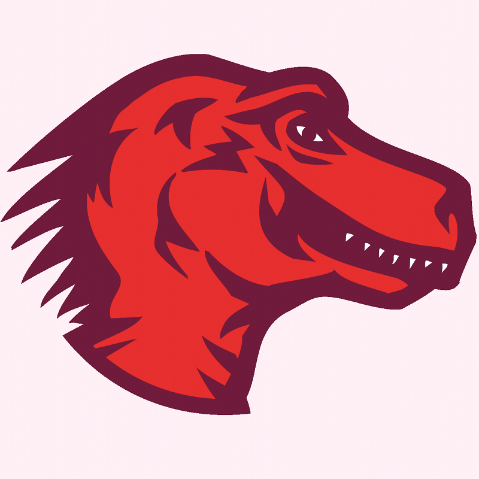

Drumbeat Learning, Freedom and the Web Festival
Program
Imagine a folk festival with many differents tents - tents for all different sorts of music, a tent where you learn how to fiddle, and maybe one where you make drums. Each has its focus. People move from tent to tent making up their own experience.
The Drumbeat Festival will work exactly like this. We'll have all kinds of spaces where you can teach and learn - studios, labs, playgrounds, classrooms and even a few tents in the public square. Each space will provide a plce to dive deep and get your hands dirty with some of the most interesting ideas at the intersection of learning, freedom and the web.

Schedule
Want to know exactly what's going to happen? You can see the draft schedule here on the Festival wiki. We're still evolving the details - but the general themes and the style of sessions will give you a feel for what's going to happen. You can also read the activities page the wiki for more detailed information.
Festival Spaces
Here's some of the different spaces we're planning for the Drumbeat Festial. Check back often as hosts will be updating these descriptions over the coming weeks.
Badge lab
Test, critique and improve bages and tools that recognize informal online learning. Hosted by P2PU, Mozilla, and Remix Learning.
Webcraft toolshed
Test, critique and improve bages and tools that recognize informal online learning. Hosted by P2PU, Mozilla, and Remix Learning.
Peer-learning fishbowl
Test, critique and improve bages and tools that recognize informal online learning. Hosted by P2PU, Mozilla, and Remix Learning.
Local learning incubator
Test, critique and improve bages and tools that recognize informal online learning. Hosted by P2PU, Mozilla, and Remix Learning.
Open content studio
Test, critique and improve bages and tools that recognize informal online learning. Hosted by P2PU, Mozilla, and Remix Learning.
Hackerspace playground
Test, critique and improve bages and tools that recognize informal online learning. Hosted by P2PU, Mozilla, and Remix Learning.
Wikipedia lounge
Test, critique and improve bages and tools that recognize informal online learning. Hosted by P2PU, Mozilla, and Remix Learning.
Open source classroom
Test, critique and improve bages and tools that recognize informal online learning. Hosted by P2PU, Mozilla, and Remix Learning.
Video + Learning gallery
Test, critique and improve bages and tools that recognize informal online learning. Hosted by P2PU, Mozilla, and Remix Learning.
Info Stage
Test, critique and improve bages and tools that recognize informal online learning. Hosted by P2PU, Mozilla, and Remix Learning.
You'll find a full list of activities confirmed and proposed for Drumbeat Festival spaces on the activities wiki page.
In Partnership With
or find out how to get more involved
What's it all about?
The open nature ofthe internet is revolutionizing how we learn. Mozilla 's 2010 Drumbeat Festival Will gather teachers, learners and technologists from around the world who are at the heart ofthis revolution. Join us in Barcelona for three days of making, teaching, hacking inventing and shaping thefuture ofeducation and the web. learn more.
-

Learn how to organize a Peer 2 Peer University course.
-

Learn how to organize a Peer 2 Peer University course.
-

Learn how to organize a Peer 2 Peer University course.
-

Learn how to organize a Peer 2 Peer University course.
-

Learn how to organize a Peer 2 Peer University course.
-
Learn how to organize a Peer 2 Peer University course.
Who should come?
-

Open textobook authors and remixers
-
People teaching web development
-
Edupunks
-
Hackerspaces
-
Creative Commoners
-
Radical librarians
-
Wikipedians
-
Open education start ups
-
And, of course, teachers and learners Of all stripes
We're extending a invite and reduced fees to attending OpenEd2010 which takes place in Barecelona on the two days before the Drumbeat Festival. Well announce details in the coming weeks.
-

Share on Identi.ca
-

Tweet this
-

Drumbeat blog (RSS feed)
-

Twitter
-

Facebook
-

Flickr
-
File a bug
-
Drumbeat wiki
-
Join the newsgroup
-
Join the weekly call
-

Mozilla.org Privacy policy